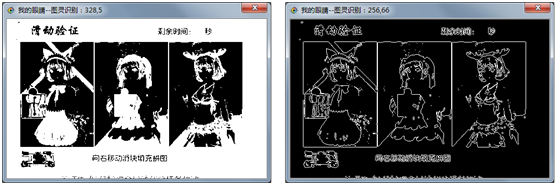

| 命令名称 | Filter_Outline 获取轮廓 |
| 命令功能 | (针对黑白图像处理)获取轮廓滤镜 |
| 语法格式 | TURING.Filter_Outline(Value, Interval, R, G, B) |
| 参数说明 |
Value：整数型，可选，两颜色之间的差值阈值，默认0 Interval：整数型，可选，间隙距离，默认1 R：整数型，可选，R颜色分量值，默认0 G：整数型，可选，G颜色分量值，默认0 B：整数型，可选，B颜色分量值，默认0 |
| 返回值 | 无 |
| 按键精灵 |
复制代码
'获取屏幕图像数据
Call TURING.Pixel_FromScreen(0,0,200,100)
'二值化处理
Call TURING.Filter_Binaryzation("128-255")
'显示获取的图像
Call TURING.Pixel_Preview()
'获取轮廓
Call TURING.Filter_Outline()
'图像预览
Call TURING.Pixel_Preview()
|
| 滤镜效果 |  |